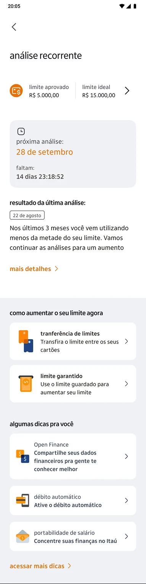
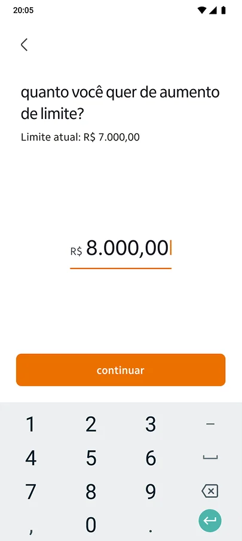

Para o cliente, limite de crédito envolve possibilidades e decisões. Mas navegar por opções e regras distintas nem sempre é simples.
O Orquestrador de Limite reuniu, em um único contexto, alternativas antes percebidas como jornadas separadas: análise de aumento, transferência entre cartões e limite com garantia de investimentos.
Começar pelo cenário atual.
A entrada reúne a situação atual do crédito e oferece caminhos para quem precisa de mais limite, reduzindo a necessidade de descobrir sozinho o que cada opção permite.
Orientar a análise, sem esconder as condições.
O fluxo de análise parte do motivo para o aumento e conduz a pessoa até a avaliação de alternativas. A experiência apresenta o limite ideal desejado, opções disponíveis e informações sobre a análise recorrente — com linguagem orientada à decisão, em vez de uma sucessão de telas isoladas.

Redistribuir com conferência e controle.
Outra frente do MVP permite ajustar a distribuição de limite entre cartões, com visualização dos novos valores antes da confirmação. A sequência enfatiza conferência, transparência dos impactos e feedback de conclusão.
Explicar como investimentos podem compor o limite.
O caminho de limite com garantia apresenta a possibilidade de utilizar investimentos elegíveis para compor o limite do cartão. O fluxo deixa visível quanto se deseja aumentar, quais investimentos podem ser selecionados e como fica a composição do limite ao final.

O MVP e seus primeiros indicadores.
O MVP foi testado em beta com 1.500 clientes. Os resultados compartilhados para a experiência incluem 96% em SUM e aproximadamente R$ 2 milhões em TPV incremental.
O aprendizado central foi que a experiência de crédito pode ser construída a partir de escolhas compreensíveis: mostrar o cenário atual, apresentar caminhos possíveis e permitir que a pessoa avance com maior clareza sobre suas condições.